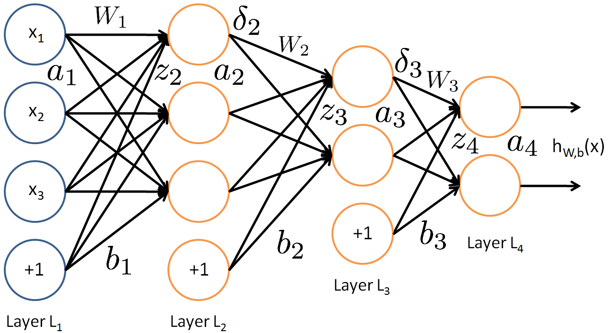

Model

Forward propagation:
z(l+1)a(l+1)hW,b(x)=W(l)a(l)+b(l)=f(z(l+1))=a(nl)
Cost function
J(W,b)=[1m∑i=1m(12∥∥hW,b(x(i))−y(i)∥∥2)]+λ2∑l=1nl−1∑i=1sl∑j=1sl+1(W(l)ji)2
Optimization
Initialize each parameter to a small random value near zero (say according to a (0,ϵ2) for some small ϵ, say 0.01), and then apply an optimization algorithm such as batch gradient descent:
W(l)ijb(l)i=W(l)ij−α∂∂W(l)ijJ(W,b)=b(l)i−α∂∂b(l)iJ(W,b)
where
α is the learning rate. The
back propagation algorithm gives an efficient way to compute these partial derivatives. The computation of the partial derivative for a single example is as follows (and computation is usually parallelized):
- Perform a feedforward pass, computing the activations for layers L2, L3, up to the output layer Lnl, using the equations defining the forward propagation steps
- For the output layer (layer nl), set
δ(nl)=a(nl)−y
- For l=nl−1,nl−2,nl−3,…,2 (there's no "error" in input layer), set
δ(l)=((W(l))Tδ(l+1))∙f′(z(l))
- Compute the desired partial derivatives for a single training example:
∇W(l)J(W,b;x,y)∇b(l)J(W,b;x,y)=δ(l+1)(a(l))T,=δ(l+1).
The ∙ denotes the element-wise product operator (also called the Hadamard product). The same extension goes for f(⋅) and f′(⋅). The partial derivatives are then sum up (and normalized by the number of training examples if they should match the cost function) to get the partial derivative w.r.t a whole batch (or minibatch).
Activation function
f(∑iWixi+b)≡f(z)
Sigmoid function:
f(z)=11+exp(−z)
whose derivative is
f′(z)=f(z)(1−f(z)) (
=a(1−a) in implementation).
Hyperbolic tangent (rescaled sigmoid):
f(z)=tanh(z)=ez−e−zez+e−z.
whose derivative is
f′(z)=1−(f(z))2 (
=1−a2 in implementation).
Rectified linear function (not bounded or continuously differentiable)
f(z)=max(0,x).

Reference
http://ufldl.stanford.edu/tutorial/supervised/MultiLayerNeuralNetworks/